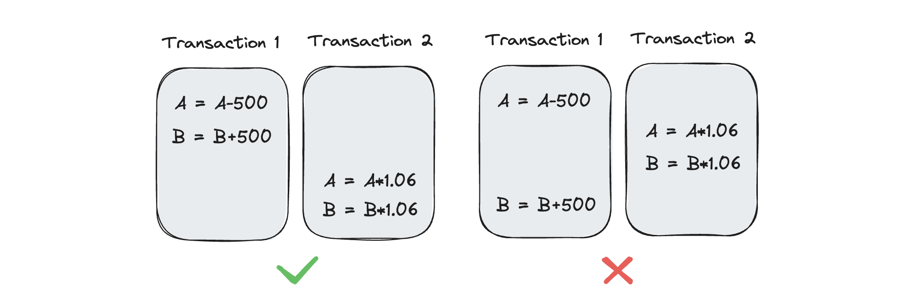
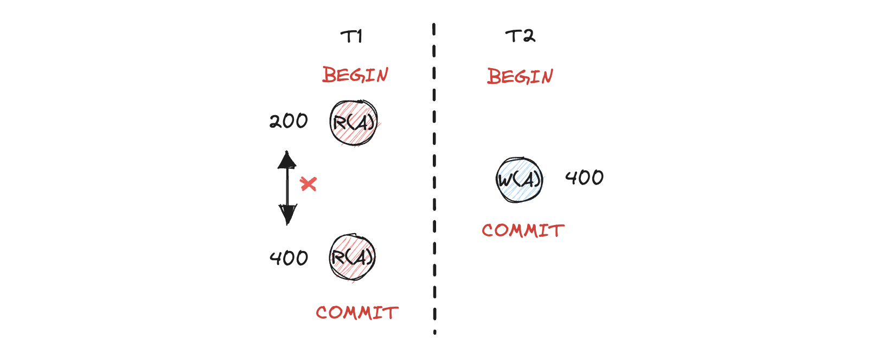
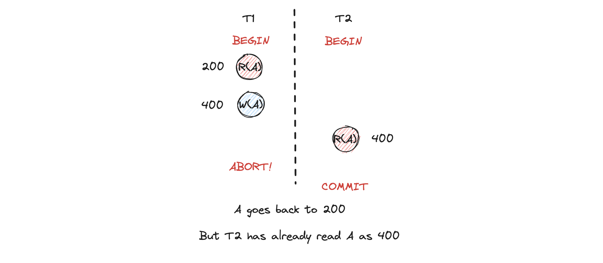
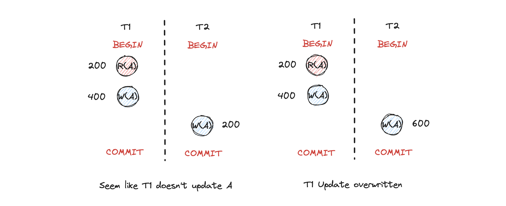
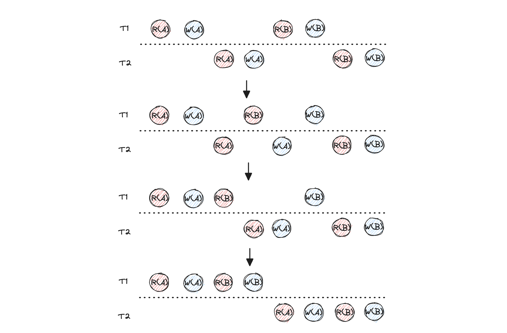
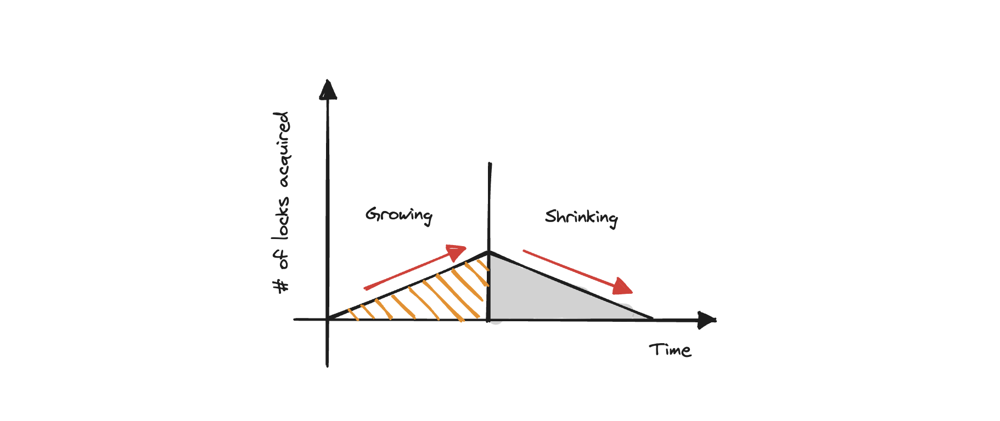

CMU 15-445 Query Execution
Project 4需要我们为bustub添加并发事务的控制和支持。同Project 1的Buffer Pool Manager一样，这里采用的是集中化的控制思路，即抽象出一个管理层——Lock Manager（LM）。当不同事务产生获取锁的需求时，统一向LM提出请求，LM负责处理锁冲突、授权获取、释放以及事务级别等等逻辑。Task 1先实现了Lock Manager，Task 2为LM添加了死锁检测的功能，Task 3在executor层提供并发支持。本篇博客首先对2PL，intention-lock等概念说明，再通过阅读相关源码理解API设计，最后阐述不同任务的实现思路。
Concurrency Control Concept
Transaction
在数据库系统中，一系列相关的逻辑操作组成的集合可以被称为一个事务。一个事务的基本操作为：
- Read(A)：从数据库中读取数据到内存
- Write(A)：从内存写数据到数据库（固化）
目前，我们可以定义事务具有两种状态（其余的跟锁有关的状态先不做考虑）：
- COMMIT：事务中所有的操作都成功执行后，提交这一个事务，将其结果固化到数据库中
- ABORT：事务中有的操作不能成功的执行，放弃此事务的执行并回滚当前事务所完成的所有操作
Properties
事务具有一些列的性质，这些性质都是为了保证在并发情况下，我们仍能得到预期的效果。事务的性质可以简称为ACID。下面分别对不同的性质做一个简要的举例，方便理解。
Atomicity：原子性。采用原子作为命名是因为原子具有不可分割的特征（不探讨更深层次的物理）。可以具像化的理解为它是一个固体，永远不可拆分。不可拆分的属性就引出，一个原子要么存在，要么不存在。引申到事务的执行角度，一个事务必须看做一个原子操作，所有内部的操作紧密关联不可分割，要么全部成功执行，要么全部不执行。
Consistency：数据库在执行事务前的状态为S，在执行完事务之后的状态也必须是S。举例：假设有两个事务T1和T2并发执行，A用户有1000元，B用户有1000元：事务T1的语义是A给B转账500元；事务T2的语义是每一个账户添加%6利息。如下图，两个账户最开始的状态总和为2000元，完成这两个事务的状态必须是2120元。

计算一下可以发现，按照第一个顺序执行时，能产生正确的状态。而如果按第二个交叉执行，会导致错误产生。数据库系统需要保证在这些类似的情况下，数据库系统状态的一致性。
Isolation：多个事务在并发执行的过程中，每一个事务执行的结果在其提交之前不可以被其他事务看到。每一个事务要像“整个系统只有它一个事务执行”那样。
Durability：一旦事务提交，就必须将事务产生的影响固化到硬盘中保存。
Schedule
我们这里可以将schedule理解为为执行方案。因为系统会面对同一时间有多个并发的事务的情况，一个事务中包含一个或多个数据的操作。引入schedule的目的就是定义并发情况下，多个事务的多个操作以什么样的顺序进行执行才能保证事务一致性和隔离性。Schedule可分为：
- Serial Schedule：顺序执行。顺序执行所有的事务，一个事务执行完毕再执行一个。这样始终能保证一致性和隔离性。但缺点是吞吐量不大，以牺牲性能为代价换取了数据一致。
- Serializable Schedule：交叉执行。执行一个事务操作的同时也能执行其他的事务操作。提升了系统的并发性能。但保证一致性和隔离性变得困难。
Concurrency Control Problem
采用serializable schedule的方法执行事务才称为并发。但这样的方式会引来很多问题。这也是在project 4中需要理解和掌握的，下面对这些问题进行阐述。
Unrepeatable Read Problem（Read-Write Conflict）：不可重复读问题，又称为读写冲突。是由于一个事务在对同一数据读取多次时，结果不一致的情况。如下图所示。

Dirty Read Problem（Write-Read Conflict）：脏读，又称写读冲突。当事务T1对A进行修改后，事务T2读到了修改的A。但是处于某种原因，T1被ABORT了，所以T1对A的操作全部回滚到A最初的状态（数据库内的A为200）。但事务2读到的却是400。

Lost Update Problem（Write-Write Conflict）：更新丢失，又称为写写冲突。当一个事务A对某一数据更新时，另一个事务B对同一数据的操作导致事务A的更新被覆盖或者丢失。

NOTE：当前情况都是无锁情况下出现的问题，但是当有锁时，采用不同程度的锁协议也会导致这类问题的发生，因此引出了隔离级别的概念。
Concurrency Control Protocols
为了解决由与我们想提升事务并发执行性能而引出的并发控制问题，就需要相关的解决方案和协议。这些协议保证了在交叉执行操作时，仍然维护数据库的一致性。（TODO：隔离性可以保证么？隔离级别？）
- Locked based protocol：基于锁的协议又可以分为普通SX锁协议以及2PL锁协议，具体2PL锁协议的理解记录在下面
- Timestamp based protocol：基于时间戳的协议不需要任何锁控制
前者属于悲观协议，后者属于乐观协议。
Conflict Serializability
在数据库执行众多transacation时，为了确保结果的一致性，最为naive的方法就是全部序列化执行。什么意思呢，比如说在同一时刻由不同用户发出了不同的事务，这里假设T1，T2，T3。全部序列化执行的意思就是先完整的执行完一个事务，再开始下一个任务的执行。如下图的序列化执行都是合法的。
之前也提到，完全序列化执行的好处是很好的维持了数据库事务的一致性。但却牺牲了并发性能。每一个事务都需要等前面所有事务执行完才有机会执行。为了解决这一个问题，并发执行事务是唯一路径。但是在并发执行时会产生由于顺序不同带来的并发执行问题，这样会破坏数据库的一致性。为了解决这一问题，我们就需要决定一个schedule是否是可序列化的，可序列化意味着这样并发执行下去不会影响数据库一致性。
这里又引入两个概念：
- Conflict Serializable：当schedule可以通过交换non-conflict operations转换为一个序列化的schedule时，这个并发的schedule就是可序列化的
- Conflicting
operations：当一个操作时conlicting时，需要满足
- 他们属于不同的事务
- 他们操作同一个数据对象
- 其中一个必须是写操作（回顾并发控制问题的R-W，W-R，W-W冲突）
通过例子进一步理解这两个概念（\(R_1(A)\)代表事务T1读取A，\(W_2(B)\)代表事务T2写B）。考虑下面这个schedule序列： \[ S1: R_1(A),W_1(A), R_2(A), W_2(A), R_1(B), W_1(B), R_2(B), W_2(B) \] 那么这两个事务分开并选取non-conflict operation进行swap操作，结果就是可序列化的schedule（注意non-conflict也要满足不属于同一事务的条件）：

也可以采用画dependency graph的方法判断是否一个schedule可序列化。具体可以见15-445 2022Fall的Lecture 17。
正如课程中所说，这样的方式确实可以判断这个schedule是否可以序列化，但需要人为的在白纸上画出这样的流程才能确定，或者需要数据库系统获取更多的语义信息。但在现实中，很少有数据库系统这样做。大多数系统采用的都是run-time的方法。
Two Phase Locking
理解了上述的概念之后，接下来着重解释一下2PL。两段锁协议时一种悲观的并发控制手段。两段锁固然包含两个阶段，如下图所示。

- Growing：在growing阶段，每一个想要获取锁的事务会向Lock Manager发出请求。Lock Manager负责授予或者拒绝
- Shrinking：在事务释放第一个锁时，立刻进入shrinking状态。此状态下不能获取其他锁。而是逐渐释放之前持有的锁
Overview of Transaction & Lock Manager
Project 4让我们实现bustub的事务控制，在了解了2PL和intention-lock之后，我们需要在代码层面理解事务和LM的设计逻辑。
Transaction
Transaction的相关定义在src/include/concurrency/transaction.h中。内部用enum
class定义了很多状态，通过阅读字面意思就能理解每一个enum的功能：
/**
* Transaction states for 2PL:
*
* _________________________
* | v
* GROWING -> SHRINKING -> COMMITTED ABORTED
* |__________|________________________^
*
* Transaction states for Non-2PL:
* __________
* | v
* GROWING -> COMMITTED ABORTED
* |_________________________^
*
**/
enum class TransactionState { GROWING, SHRINKING, COMMITTED, ABORTED };
/**
* Transaction isolation level.
*/
enum class IsolationLevel { READ_UNCOMMITTED, REPEATABLE_READ, READ_COMMITTED };
/**
* Type of write operation.
*/
enum class WType { INSERT = 0, DELETE, UPDATE };
/**
* Reason to a transaction abortion
*/
enum class AbortReason {
LOCK_ON_SHRINKING,
UNLOCK_ON_SHRINKING,
UPGRADE_CONFLICT,
DEADLOCK,
LOCKSHARED_ON_READ_UNCOMMITTED
};用TableWriteRecord和IndexWriteRecord分别记录了在执行写操作时，相关的上下文信息。比如对于TableWriteRecord而言，需要记录写的record
id、WType以及Table的指针（用于记录写在哪个table）。
TransactionAbortException会在一个事务状态变为ABORTED后抛出一个事务异常。只需要两个成员变量，一个是事务的id（指明是哪个事务），另一个是abort理由。用于打印异常信息。
Transaction维护了很多成员变量，包括：
- txn_id：事务id，bustub分配
- isolation_level：隔离级别（默认为REPEATABLE_READ，在bustub中属于最高级别）
- thread_id：执行这个transaction的线程号，通过
std::this_thread::get_id()获取 - table_write_set：用std::deque封装，TableWriteRecord作为基本类型，记录一个事务的写操作集合
- index_write_set：用std::deque封装，IndexWriteRecord作为基本类型，记录一个事务在索引的写操作集合
- shared_lock_set：无序集合，定义了tuple粒度的共享锁集合，可根据rid查询一个tuple是否持有共享锁
- exclusive_lock_set：无序集合，定义了tuple粒度的互斥锁集合，可根据rid查询一个tuple是否持有互斥锁
所有的成员函数都是有关上述变量的Get和Set操作。
Lock Manager
总体而言，lock manager维护了一个锁表（lock table），所有操作通过与锁表互动来完成。锁表由std::unordered_map来封装，